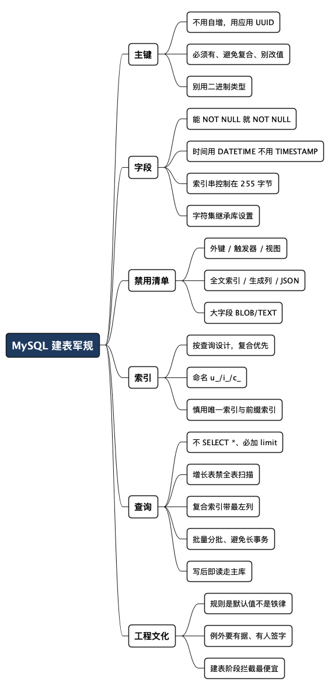

大厂 MySQL 建表军规：那些评审会上被打回来的坑
Posted on 六 18 7月 2026 in Tech
| Abstract | 大厂 MySQL 建表军规：那些评审会上被打回来的坑 |
|---|---|
| Authors | Walter Fan |
| Category | learning note |
| Version | v1.0 |
| Updated | 2026-07-18 |
| License | CC-BY-NC-ND 4.0 |
大厂 MySQL 建表军规：那些评审会上被打回来的坑
写业务代码这么多年，我发现一个规律：新人栽跟头，很少栽在算法上，多半栽在建表上。
一张表当时建得随手，id 用自增，时间用 TIMESTAMP，几个字段图省事全设成 NULL，再顺手加个 JSON 列存"扩展属性"。功能跑得好好的，评审也过了。等两年后数据涨到几千万行、要做分库分表、要跨机房迁移——才发现当初那几个"随手"，每一个都是一颗定时炸弹。
我最近整理了一份大厂内部的 MySQL 设计评审清单，越看越觉得：这里面几乎每一条禁令，背后都躺着一次真实的线上事故。 规则本身好背，难的是理解它在防什么坑。这篇就把这些规则摊开，一条条讲清楚"为什么"。
- 不是什么：这不是"MySQL 教程"，不教你 SQL 语法。
- 是什么：这是一份"上生产前该被谁拦下来"的评审清单，重点在每条规则背后的代价。
急的读者可以直接跳到文末的自查清单。想搞懂原理的，跟我一条条过。
说明：下面的规则综合自业界常见的数据库设计规范（阿里、腾讯等都有类似版本），并做了脱敏和通用化处理。具体阈值（比如分页上限、字段宽度）各家不同，重要的是思路，不是数字本身。
一、建表：地基没打好，后面全是返工
主键：别用自增，用应用生成的 UUID
这条最反直觉，很多人第一反应是"自增主键不香吗，又快又简单"。
单机时代确实香。但一旦你要分库分表、跨机房迁移、多活，自增主键就变成灾难——两个库各自从 1 开始自增，合并时主键直接撞车。所以军规是：
不用自增主键。没有天然主键时，在应用层生成 UUID，存进一个字符串列。
配套的几条，每条都有它要防的具体问题：
- 每张表必须有主键。原因有二：一是 InnoDB 的数据本身就是按主键组织的（聚簇索引），没有显式主键 MySQL 会偷偷给你造一个隐藏的，你既控制不了也用不上；二是主从复制在 ROW 模式下删/改一行时，要靠主键定位"是哪一行"，没主键就可能定位错行，导致主从数据悄悄分叉。
- 避免复合主键。复合主键意味着所有二级索引都要带上这几个主键列，索引更胖、写入更慢；ORM 映射、外部引用、数据迁移也都要处理"多列身份"，复杂度陡增。能用单列 UUID 就用单列。
- 不要更新主键值。主键是聚簇索引的组织依据，改主键等于把整行数据从物理位置 A 挪到 B，代价极大；而且所有引用它的地方都得跟着改，极易漏改。主键是身份证号，不是可改的属性——真要"换身份"，删了重新插一行。
- 主键别用二进制类型。跨环境的数据比对工具要拿主键做"行对齐"，binary 类型在不同工具/编码下表示不一致，比对时会冒出一堆根本不存在的"假差异"，让你没法判断两边到底同步没有。用定长字符串（比如
VARCHAR(32)存 compact UUID）更稳妥。
NULL：能不用就不用
能设 NOT NULL 的列，尽量 NOT NULL。NULL 的坑在于它的三值逻辑——NULL = NULL 结果不是 true 而是 NULL，COUNT(列) 会跳过 NULL，一不小心统计就错。
实操上：
- 字符串列：如果"空"就等于"没有"，用
NOT NULL DEFAULT ''。 - 整数列：如果 0 是合法的默认/缺省值，用
NOT NULL DEFAULT 0。
当然，如果"没填"和"填了空"在业务上真的是两回事（比如"用户没设置过"vs"用户清空了"），那 NULL 有它的意义，这时候就该在设计文档里写清楚为什么留 NULL。规则是默认值，例外要有理由。
时间：用 DATETIME，别用 TIMESTAMP
这条很多人不知道原因。TIMESTAMP 底层是 32 位整数，存的是从 1970 年起的秒数——它在 2038 年 1 月 19 日会溢出（著名的 "Year 2038 问题"）。你的表如果活得够久，或者要存未来的时间（比如 2040 年到期的合约），TIMESTAMP 直接爆掉。
用
DATETIME（需要毫秒就DATETIME(3)），不用TIMESTAMP。
另外，每张表都要有创建时间和修改时间两个列。哪怕是"只插不改"的日志表，也保留这俩字段——出问题排查时，时间戳是你唯一能抓住的线索。
字段宽度：按真实业务量身定，别拍脑袋 VARCHAR(255)
VARCHAR(255) 是很多人的默认习惯，但它未必合适。关键在索引：
InnoDB 的索引键有长度上限（经典的 767 字节，新版本 DYNAMIC 行格式下 3072 字节）。而 utf8mb4 下一个字符最多占 4 字节，所以 VARCHAR(255) 在 utf8mb4 下是 255 × 4 = 1020 字节——一旦要给它建索引，很容易撞上长度限制。
军规的做法是：要建索引的字符串列，控制在 255 字节以内；utf8mb4 下大约 VARCHAR(60) 就到这个量级了。 需要更长的，先算清楚字节宽度，再走一道审批。
字符集：在库级别设一次，表和列都别单独设
不要在表或列上单独指定 CHARSET 和 COLLATION，让它们继承数据库的设置。原因有两个，都很隐蔽：
- JOIN/比较时的"隐式转换"：如果 A 表某列是 collation X，B 表某列是 collation Y，两列做关联或比较时 MySQL 要做隐式转换，轻则索引失效（本来能走索引的查询突然全表扫描），重则直接报
Illegal mix of collations错误。 - 升级时的"collation 漂移"：不同 MySQL 版本的默认 collation 可能变（比如 8.0 默认从
utf8mb4_general_ci改成了utf8mb4_0900_ai_ci）。你在各处零散指定的 collation 和库默认值不一致时，升级后同样的字符串在不同列比较结果就可能不一样——这种 bug 隐蔽到让你怀疑人生。
补一句：如果实在必须在建表语句里写 CHARSET，那就必须同时写 COLLATION，别只写一半，否则升级时另一半会用新版本的默认值，埋雷。
那库级别该设成什么？推荐 utf8mb4，别用 utf8。
这是个坑了无数人的历史遗留问题：MySQL 里的 utf8 并不是"真正的 UTF-8"——它是 utf8mb3 的别名，每个字符最多只占 3 字节，只能存 Unicode 基本平面（BMP）的字符。结果就是：
- 存不了 emoji（😀 这类字符是 4 字节的），插入时要么报错要么变成一堆问号。
- 存不了部分中日韩生僻字和补充平面字符——用户名字里有个生僻字，直接入库失败。
我见过不止一次线上事故就是这么来的：表建的时候用了 utf8，平时中英文都正常，直到有天用户昵称带了个 emoji，写入直接炸。而 utf8mb4 用 1-4 字节完整覆盖了 UTF-8，是 utf8 的超集，多出来的开销可以忽略。官方也早已在 8.0 把 utf8mb3 标记为弃用，默认字符集就是 utf8mb4。
collation（校对规则，决定字符串怎么排序和比较）配套推荐：
utf8mb4_0900_ai_ci：MySQL 8.0+ 的默认值，基于新版 Unicode 排序算法，性能和正确性都更好。ai= accent insensitive（不区分重音），ci= case insensitive（不区分大小写）。新库首选它。utf8mb4_unicode_ci：如果要兼容 5.7，用这个，排序比老的general_ci更符合语言习惯。utf8mb4_bin：需要严格区分大小写（比如密码、token、区分大小写的业务编码）时用它，按二进制逐字节比较。
一句话：库级别统一 utf8mb4 + 一个明确的 utf8mb4_*_ci（有大小写敏感需求的用 _bin），表和列全部继承，不再零散指定。
一串"禁令"：这些东西大厂基本都不让用
这部分我合并起来讲，因为逻辑是相通的——它们都在"某种运维/迁移/兼容场景"下会出事：
| 禁用项 | 为什么禁（具体原因） |
|---|---|
| 外键（Foreign Key） | ① 分库分表后，被引用的表可能在另一个库，外键根本跨不过去；② 高并发写入时，外键检查会给父表加锁，容易引发锁等待甚至死锁，拖垮性能；③ 约束藏在 DB 里，应用层看不见，出错时排查困难。结论：把引用完整性放到应用层显式校验。 |
| 触发器（Trigger） | ① 它是"隐形的连锁写入"——你只 UPDATE 了一行，背后却触发了一堆你没写的操作，出问题极难定位；② 复制/同步链路只搬明面的数据变更，下游未必会触发同样的 trigger，导致两边数据分叉；③ 业务逻辑散落在 DB 里，版本管理和 code review 都覆盖不到。 |
| 视图（View） | ① 把复杂查询藏在 DB 层，优化器对多层嵌套视图的执行计划常常很糟，性能不可控；② 视图变更不走应用的发布流程，容易成为"没人负责"的黑盒；③ 迁移和同步工具对视图支持参差。要复用查询逻辑，放到应用/DAO 层。 |
| 全文索引 | ① MySQL 的全文检索能力弱、分词和相关性排序都不专业；② 它的维护成本高、锁行为特殊，容易拖累写入。真要做搜索，用专门的搜索引擎（Elasticsearch 之类），各司其职。 |
| 生成列（Generated Column） | 它的值是源库算出来的。复制/同步时，下游到底是"照搬这一列"还是"自己重算"，不同工具行为不一，很容易两边算出不同结果——跨环境比对直接对不上。改用应用维护的普通列，所见即所存。 |
| JSON 列 | ① 早期版本改 JSON 里一个字段，binlog 要写整个文档，体积暴涨、复制变慢；② 无法像普通列那样高效建索引和查询；③ 跨平台同步对 JSON 支持不完整。把字段拆成明确的标量列，可索引、可比对、可复制。 |
| 大字段 BLOB/TEXT | ① 单行过大，InnoDB 要把它拆到溢出页，读写都要多次 IO，还把 buffer pool 挤爆；② 大行让 binlog 膨胀、复制延迟飙升；③ 尤其 MEDIUMTEXT/LONGTEXT/MEDIUMBLOB/LONGBLOB 更甚。真要存大对象，放对象存储，DB 里只留一个引用（URL/key）。 |
这里的共同哲学是：MySQL 只放"当前的、基础的、结构化的"数据。 会无限增长的历史/审计数据，往能追加写、易扩展的存储去放（DynamoDB、对象存储等）。
索引命名与设计：给查询建，不是给列建
- 命名要有约定：唯一索引
u_前缀，单列索引i_前缀，复合索引c_前缀。名字一眼看出类型，评审和排查都省事。 - 别给每个列都单独建索引。索引不是越多越好——写入时每个索引都要维护，太多索引拖慢写入。要围绕真实的查询条件建复合索引。
- 避免前缀索引（
INDEX(col(10))）。前缀索引选择性差、还可能让优化器判断失误，能用全列索引就用全列。 - 唯一索引要慎用。如果唯一性能在应用层安全地保证，就别用数据库唯一索引；只有并发场景下必须靠 DB 兜底时才用，而且要在文档里写明这个例外。
大表改结构：能不动就不动
对已经很大的表做 DDL（加列、改类型、加索引），可能锁表几分钟甚至更久，直接把线上服务干趴。军规是尽量避免大表的 schema 变更；真要改，走专门的在线 DDL 工具和迁移评审，别在业务高峰随手 ALTER。
二、查询：慢 SQL 是怎样炼成的
建表是地基，查询是日常。这部分的规则，本质都在防一件事：别让一条 SQL 拖垮整个库。
三条最该刻在脑门上的
- 不许
SELECT *。只查你要的列。SELECT *会把大字段、无用列全捞出来，浪费 IO 和内存，还让索引"覆盖查询"的优化失效。 - 会增长的表，绝不允许全表扫描。只有"故意做小"的表（比如配置元数据）才允许扫。上线前用
EXPLAIN/EXPLAIN ANALYZE看执行计划，出现type: ALL（全表扫描）就要警惕。 - 一定要加 limit。哪怕你"确定"结果不多。一页别超过 2000 行（具体阈值各家不同）。没有 limit 的查询，是把"表突然变大"的风险敞开着。
关于 JOIN 和子查询
- SQL 越简单越好，JOIN 越少越好。复杂 JOIN 在数据量大时执行计划极不稳定。必要的关联，要作为"关键查询"单独评审，附上执行计划证据。
- 避免
WHERE id IN (SELECT ...)这类子查询。老版本 MySQL 对这种子查询优化很差，能改成经过评审的 JOIN 就改。
关于排序和分组
ORDER BY、GROUP BY、DISTINCT 不是不能用，而是除非结果契约真的需要，否则别用。它们容易触发 filesort（文件排序）和临时表，是慢查询的常客。用之前先想清楚：这个排序/去重，是业务必须的，还是我顺手加的？
复合索引：记住"最左前缀"
用了复合索引 c_a_b_c（列 a、b、c）的查询，必须带上它的最左列。只查 WHERE b = ? 是用不上这个索引的。这是复合索引最容易被忽略、也最容易白建的坑。
批量操作：分批，别一口吞
一次性 DELETE/UPDATE/INSERT 几十万行，会产生超长事务、锁大量行、撑爆 binlog。军规是分批处理，每批有上限（比如后台任务每批 1000 行，普通请求列表参数不超过 200 个），循环跑多批，而不是把范围塞进一条语句。
配套还有几条：
- 避免长事务。事务开着不提交，会一直持有锁、撑大 undo log。把事务范围压到最小。
- 禁止
INSERT INTO A SELECT * FROM B——一条语句锁两张表还全字段拷贝，风险极高。 - 别用
INSERT ... ON DUPLICATE KEY UPDATE和REPLACE INTO。这俩在并发下容易死锁；老老实实分开写"先查、再决定 update 还是 insert"的逻辑。
读写分离：用对场景
如果有读库（read replica），能容忍一点延迟的读，路由到读库分担压力；但"写完必须立刻读到"的场景，必须走主库——读库有复制延迟，你刚写的数据可能还没同步过去。这个判断错了，会出"我明明保存了怎么查不到"的诡异 bug。
三、实战对比：三张表，看规则到底在防什么
光讲规则容易左耳进右耳出。咱们建三张真实感的表，每张都先给一版"新手很可能写出来的"，再给一版"评审能过的"，然后掰开揉碎看差在哪、为什么。
例一：用户表 —— 主键、时间、NULL 的经典三连坑
先看一版随手写的 user 表——功能上完全能跑，评审时却会被红笔画满：
-- ❌ 反例：能跑，但埋了一堆雷
CREATE TABLE user (
id INT AUTO_INCREMENT PRIMARY KEY, -- 自增主键
email VARCHAR(255), -- 没 NOT NULL，还要建唯一索引
nickname VARCHAR(255),
profile JSON, -- JSON 存扩展属性
created TIMESTAMP DEFAULT CURRENT_TIMESTAMP, -- TIMESTAMP
UNIQUE KEY uk_email (email(20)) -- 前缀索引 + uk_ 命名
);
再看评审能过的版本：
-- ✅ 正例
CREATE TABLE user (
id VARCHAR(32) NOT NULL, -- 应用生成的 compact UUID
email VARCHAR(60) NOT NULL DEFAULT '', -- NOT NULL，宽度按真实域收敛
nickname VARCHAR(60) NOT NULL DEFAULT '',
status TINYINT NOT NULL DEFAULT 0, -- 扩展属性拆成明确的标量列
gmt_create DATETIME(3) NOT NULL,
gmt_modify DATETIME(3) NOT NULL,
PRIMARY KEY (id),
UNIQUE KEY u_email (email) -- 全列索引 + u_ 命名
);
逐条看差在哪：
| 反例的写法 | 埋了什么雷 | 正例怎么改 |
|---|---|---|
id INT AUTO_INCREMENT |
分库分表/跨机房时两个库主键撞车；INT 最多 21 亿，涨爆过 |
应用生成 VARCHAR(32) UUID |
email VARCHAR(255) 可 NULL |
NULL 三值逻辑坑统计；255×4=1020 字节，建索引撞长度上限 |
NOT NULL DEFAULT '' + VARCHAR(60) |
profile JSON |
体积/性能不可控，很多同步平台不支持 | 拆成 status 等明确标量列 |
created TIMESTAMP |
2038 年溢出；且只有创建时间没有修改时间 | gmt_create + gmt_modify 双 DATETIME(3) |
uk_email (email(20)) |
前缀索引选择性差；uk_ 不符命名约定；只取前 20 字符可能误判唯一 |
全列 u_email |
一张十来行的建表语句，藏了 5 类规则违规。这就是为什么评审清单看着啰嗦——每一条都对应一个能让你半夜爬起来的坑。
例二：订单表 —— 复合索引"最左前缀"白建的钱
假设订单表最高频的查询是"查某个用户某种状态的订单，按时间倒序"：
SELECT id, amount, status, gmt_create
FROM orders
WHERE user_id = ? AND status = ?
ORDER BY gmt_create DESC;
新手常见操作：给每个 WHERE 里出现的列都单独建一个索引，图个"都覆盖到"：
-- ❌ 反例：三个单列索引，写入慢，查询还用不满
KEY i_user (user_id),
KEY i_status (status),
KEY i_time (gmt_create)
问题在于：MySQL 一次查询通常只能用上一个索引。上面这条 SQL 最多用到 i_user 过滤出该用户的所有订单，然后 status 过滤和 gmt_create 排序还得回表 + filesort。三个索引养着，写入时三份都要维护，钱花了效果差。
正确做法：按查询顺序建一个复合索引：
-- ✅ 正例：一个复合索引，精准命中
KEY c_user_status_time (user_id, status, gmt_create)
这样 user_id = ? AND status = ? 走索引前两列精准定位，gmt_create 已经在索引里有序，排序都省了。这就是复合索引的威力，也是"最左前缀"的意义——
建了
c_user_status_time，查询必须带上最左列user_id才能用上它。 只写WHERE status = ?（跳过了user_id）？这个索引对它毫无用处，等于白建。
用 EXPLAIN 一看便知：正例的 type 是 ref、key 是 c_user_status_time、Extra 没有 Using filesort；反例大概率是 Using where; Using filesort。上线前跑一次 EXPLAIN，这类问题当场现形。
例三：历史日志表 —— 选错存储，迟早被数据压垮
这个坑最隐蔽，因为它上线头几个月完全正常。假设要记操作审计日志：
-- ❌ 反例：把无限增长的历史往 MySQL 里塞
CREATE TABLE audit_log (
id BIGINT AUTO_INCREMENT PRIMARY KEY,
user_id BIGINT,
action VARCHAR(50),
detail LONGTEXT, -- 大字段存详情
gmt_create TIMESTAMP DEFAULT CURRENT_TIMESTAMP
);
这张表的问题不在语法，在定位：审计日志是只追加、永不删、无限增长的。半年后它可能就是几亿行、几百 GB，那时候：
- 想加个索引？大表 DDL，锁表半小时起。
- 想按条件查历史？没有合适索引就是全表扫描，一查就把库拖垮。
LONGTEXT让单行巨大，把 buffer pool 挤得七零八落。
正确的思路不是"把这张表设计得更好"，而是"这类数据根本不该放 MySQL"：
- 无限增长的历史/审计，放到能廉价追加、易扩展的存储——对象存储、DynamoDB、专门的日志/时序系统。
- MySQL 里如果非要留，也只留有界的、近期的热数据，配好保留期（比如只留 30 天），过期归档。
- 大对象（附件、长文本详情）存对象存储，MySQL 里只存一个引用（URL 或 key）。
这条规则背后的哲学，值得单独抄下来：
MySQL 是给"当前的、基础的、要被频繁增删改查的结构化数据"用的，不是数据仓库，更不是日志归档。 选错存储类型，是那种"当下最省事、将来最要命"的决定。
四、被忽略的根因：很多禁令，是给"数据复制"让路的
前面那份禁用清单，很多人第一反应是"MySQL 明明支持 JSON / 生成列 / 外键，凭什么禁？"——因为你的数据往往不是只活在这一个库里。
真实的生产系统，MySQL 的数据几乎都要被复制/同步出去：主从复制做高可用、跨机房同步做多活、通过 CDC（Change Data Capture，变更数据捕获）灌进数据仓库或搜索引擎、用数据同步平台在多个环境间比对一致性。数据一旦要"流动"，源库上一个看似无害的设计，就可能让下游同步链路对不上账。
理解了这条链路，前面一半的禁令就从"背规则"变成了"讲道理"。
复制是怎么工作的：先认识 binlog
MySQL 的复制核心是 binlog（二进制日志）——所有数据变更都记在这里，下游按它回放。binlog 有两种主要格式，坑就藏在这里：
- Statement-Based（SBR，记 SQL 语句）：把
UPDATE ...这条语句原样发给下游重放。 - Row-Based（RBR，记行变更）：只记"这一行从什么变成了什么"。
SBR 有个致命问题：任何"结果不确定"的 SQL，在下游重放会得到不同结果。 比如 NOW()、UUID()、RAND()、自增值——源库和从库各算各的，数据当场分叉。这也是为什么现代生产环境基本都用 RBR 或 MIXED。而这个"不确定性"的坑，会顺着链路影响你的建表选择。
逐条对号入座：禁令 ↔ 复制约束
| 建表禁令 | 和数据复制的关系 |
|---|---|
| 每张表必须有主键 | 这是复制的硬要求。RBR 删/改一行时，下游要靠主键（或唯一键）定位到"哪一行"。没有主键，下游可能匹配到错误的行，MySQL 官方明确说这会让"源和副本静默分叉，破坏一致性"——连报错都没有。 |
| 主键别用二进制类型 | 跨环境的数据比对工具要拿主键做行对齐。binary 主键在不同工具/编码下表示不一致，比对时会冒出一堆"假差异"，根本没法确认两边到底同没同步。用定长字符串 UUID 就没这问题。 |
| 禁生成列 | 生成列的值是源库算出来的。同步链路把这列当普通列传，还是让下游重算？不同工具行为不一，很容易两边算出不同结果。干脆禁掉，改成应用维护的普通列——所见即所存。 |
| 禁 JSON | JSON 在复制里又大又麻烦：早期版本每次改一个字段都要把整个文档写进 binlog，体积暴涨；跨平台同步对 JSON 的支持还参差不齐。拆成标量列，复制清爽。 |
| 禁大字段 LONGBLOB/LONGTEXT | 大字段让单行变得巨大，binlog 跟着膨胀，同步延迟飙升，一个大事务能把复制链路堵住。 |
| charset/collation 要一致、别在表/列单独设 | 跨环境比对时，如果两边 collation 不同，同样的字符串会被判成"不相等"——又是"假差异"。统一继承库设置，比对才可信。 |
| 禁外键、禁触发器 | 它们都是"隐式的连锁写入"。同步链路只搬明面上的数据变更，下游未必会触发同样的连锁反应，两边越跑越偏。 |
看出来了吗?这些禁令的一大半，根本不是 MySQL 单机跑不动，而是"数据要复制出去"这件事对源库提出的纪律。 单机自己玩，你爱用 JSON 用 JSON；可一旦进了要做主从、多活、CDC 的生产环境，这些自由就成了同步链路的定时炸弹。
实践中要额外注意的几点
除了建表纪律，真正接上复制/同步链路时，还有几个坑值得提前想到：
- 确认 binlog 用的是 ROW 格式。这是让复制"可预测"的前提，别让 SBR 的不确定性毁掉一致性。
- 别在 SQL 里依赖"不确定函数"。
NOW()、UUID()、RAND()这类，尽量在应用层算好了再写库——顺带一提，这也正是"主键用应用生成 UUID"的又一个理由。 - 大事务是复制的天敌。一次改几十万行，下游要么延迟暴涨要么直接卡住。呼应前面的"批量分批"——分批不只是为了本库的锁，也是为了下游追得上。
- schema 变更要考虑同步链路。源库加了个下游工具不认的类型（比如某种特殊列），同步可能直接报错中断。所以大表 DDL、加新类型，都要问一句"下游同步扛得住吗"。
- 给同步/比对留好"锚点"。稳定的主键、创建/修改时间戳，就是比对工具对齐两边数据的抓手——这也是"必有主键、必有时间戳"的隐藏用途。
一句话:
单机视角看是"限制"，全链路视角看是"纪律"。 你建的不是一张孤立的表，而是一条数据流的源头。
五、一个容易被忽略的角度：规则也要允许"有据的例外"
讲了这么多"禁令"，我最想强调的其实是这一点——好的规范，不是一刀切，而是给例外留了口子，但要求例外必须有证据。
比如"慎用唯一索引"，但如果你的业务在高并发下确实需要数据库来做唯一性仲裁（应用层 check-then-insert 挡不住并发），那就该用唯一索引——前提是你在设计文档里写清楚：并发竞争在哪、为什么应用层挡不住、评审人是谁。
再比如"避免大字段"，但如果你确实要存一段有界的二进制（比如加密后的密文），那可以用有明确上限的 VARBINARY，但同样要写明上限、走审批。
这背后是一套我很认同的工程文化：
规则是默认值（default），不是铁律（law）。 遵守规则不需要理由，违反规则需要——而且这个理由要落在纸上、有人签字，而不是"我觉得没事"。
这样既避免了"新人乱来"，又不至于让规范变成挡住合理创新的官僚主义。每条被"豁免"的规则，都对应一份写下来的、有人负责的决策。这才是评审清单真正的价值——它逼着你把"想当然"变成"想清楚"。
写在最后
数据库设计有个残酷的特点：代码写错了可以随时改，表设计错了，等有了数据就很难改了。 一张几千万行的表，加个索引可能要停机维护，改个字段类型可能要迁移一整晚。
所以这些"军规"看着琐碎、甚至有点不近人情，但它们几乎都是拿真实事故换来的。评审会上被打回来的时候别嫌烦——在建表阶段被拦下来，是最便宜的一次拦截。 等上了生产、涨了数据再发现，代价要翻几百倍。
老话说，凡事预则立，不预则废。建表这件事，就是典型的"预"——多花半天想清楚，能省掉后面几个通宵。
建表 & 查询自查清单（收藏版）
建表：
- [ ] 每张表都有主键，且是应用生成的 UUID（非自增、非复合、非二进制）
- [ ] 有创建时间 + 修改时间两个
DATETIME列（不用TIMESTAMP） - [ ] 能
NOT NULL的都NOT NULL，留NULL的写明理由 - [ ] 要建索引的字符串列控制在 255 字节内（utf8mb4 下约
VARCHAR(60)） - [ ] 字符集/collation 继承库设置，不在表/列单独设
- [ ] 无外键、无触发器、无视图、无全文索引、无生成列、无 JSON 列
- [ ] 无大字段（
MEDIUMTEXT/LONGTEXT/MEDIUMBLOB/LONGBLOB） - [ ] 索引按查询设计（复合索引优先），命名用
u_/i_/c_前缀 - [ ] 唯一索引和其他例外，都有书面理由
查询：
- [ ] 不用
SELECT *，只查需要的列 - [ ] 会增长的表无全表扫描，上线前跑过
EXPLAIN - [ ] 每个查询都有 limit（一页别超 2000 行）
- [ ] JOIN 尽量少，复杂查询走单独评审
- [ ] 复合索引查询带最左列
- [ ] 批量操作分批、有上限，避免长事务
- [ ] 不用
ON DUPLICATE KEY UPDATE/REPLACE INTO/INSERT INTO A SELECT * FROM B - [ ] 不更新主键值（要换身份就删了重插）
- [ ] "写完立刻读"走主库，可容忍延迟的读走读库
参考资料
想深入或者拿去说服同事，下面这几份都是公开、可引用的权威资料。提醒一句：不同规范之间并不完全一致（后面会点出几处分歧），要结合自己的业务量级和部署形态判断，别照单全收。
综合规范类
- 《阿里巴巴 Java 开发手册》（嵩山版）PDF —— 业界流传最广的一份，"MySQL 数据库"章节把规约分成【强制】【推荐】【参考】三档，覆盖建表、索引、SQL、ORM 映射。GitHub 上的 alibaba/p3c 还提供了配套的代码规约扫描插件（IDEA/Eclipse）。
- 各家云厂商的《数据库设计规范》文档（阿里云、腾讯云开发者社区都有多篇），思路大同小异，可以横向对比着看。
MySQL 官方文档（最终裁判，遇到分歧以它为准）
- Date and Time Data Types ——
DATETIME与TIMESTAMP的取值范围写得清清楚楚，2038 问题的根源在这。 - Data Type Storage Requirements —— 各类型占多少字节，算索引宽度时要用。
- InnoDB Limits —— 索引键前缀长度上限（767 / 3072 字节），前面"字段宽度"那节的依据。
- Optimizing InnoDB Tables 与 Using EXPLAIN —— 查询优化和执行计划分析的官方入门。
几处值得注意的分歧
- 自增主键：阿里手册对中小系统其实是允许
bigint unsigned自增的，只在分库分表时才要求换成分布式 ID。而本文采用的是更激进的口径（默认就用应用生成的 UUID）——因为一旦考虑跨机房迁移，UUID 省去了后续换主键的痛。选哪种，取决于你未来会不会走到分布式那一步。 - 主键类型：有的规范推荐
bigint（省空间、自增友好），有的推荐字符串 UUID（迁移/多活友好）。没有绝对答案，是一道 trade-off 题。
一句话：规范是别人拿事故换来的经验，但最终为你这张表负责的是你自己。 参考、理解、然后按自己的场景做决定。
全文思维导图
@startmindmap
<style>
mindmapDiagram {
node {
BackgroundColor #F8F9FA
RoundCorner 10
Padding 10
FontSize 13
}
:depth(0) {
BackgroundColor #1E3A5F
FontColor white
FontSize 18
FontStyle bold
}
:depth(1) {
FontSize 15
FontStyle bold
}
:depth(2) {
FontSize 13
}
}
</style>
* MySQL 建表军规
** 主键
*** 不用自增，用应用 UUID
*** 必须有、避免复合、别改值
*** 别用二进制类型
** 字段
*** 能 NOT NULL 就 NOT NULL
*** 时间用 DATETIME 不用 TIMESTAMP
*** 索引串控制在 255 字节
*** 字符集继承库设置
** 禁用清单
*** 外键 / 触发器 / 视图
*** 全文索引 / 生成列 / JSON
*** 大字段 BLOB/TEXT
** 索引
*** 按查询设计，复合优先
*** 命名 u_/i_/c_
*** 慎用唯一索引与前缀索引
** 查询
*** 不 SELECT *、必加 limit
*** 增长表禁全表扫描
*** 复合索引带最左列
*** 批量分批、避免长事务
*** 写后即读走主库
** 实战对比
*** 用户表：主键/时间/NULL 三连坑
*** 订单表：复合索引最左前缀
*** 日志表：选错存储迟早压垮
** 工程文化
*** 规则是默认值不是铁律
*** 例外要有据、有人签字
*** 建表阶段拦截最便宜
@endmindmap

本作品采用知识共享署名-非商业性使用-禁止演绎 4.0 国际许可协议进行许可。 欢迎在我的个人网站 https://www.fanyamin.com 访问原文并评论。